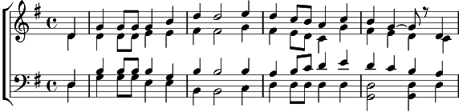

1. Les yeux de la Marianita ont la couleur de l'olive (2x)
Marianita est ma mie, Marianita est mon bien
2. Les yeux de la Marianita ont la couleur des cerises (2x)
Marianita est ma mie, Marianita est mon bien
3. Les yeux de la Marianita ont la couleur des ténèbres (2x)
Marianita est ma mie, Marianita est mon bien